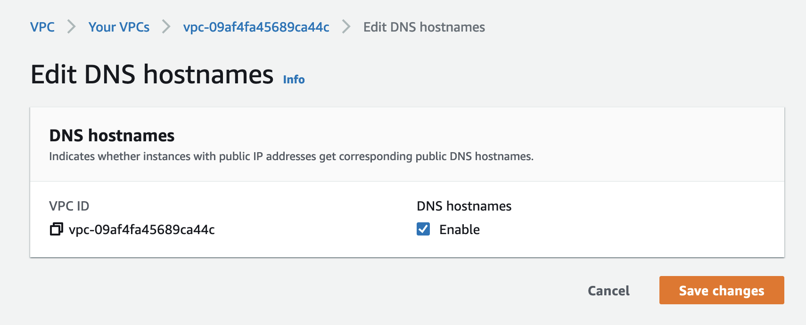
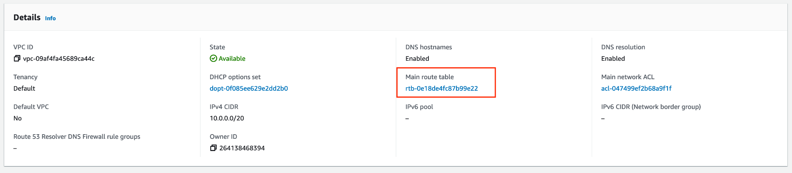
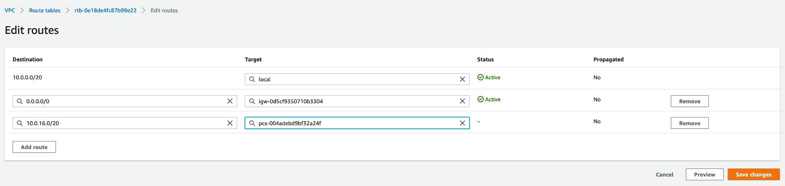

Create a VPC Peering Connection with AWS
- how-to
Use this procedure to create a VPC Peering connection between Capella hosted with AWS and your application’s VPC on AWS.
Prerequisites
To configure Couchbase Capella VPC peering with AWS, you need the following:
-
One of the following Capella roles:
-
The AWS Command Line Interface (CLI) installed and configured.
You must also preconfigure your AWS VPC by completing the following steps:
-
In AWS, enable DNS hostnames for the VPC:
 -
In AWS, enable DNS resolution for the VPC:

-
Make sure the CIDR block specified when creating your database does not overlap with the application VPC CIDR block. You can retrieve the CIDR block for a database using the public API.
Procedure
-
Open the database where you want to create the new private network.
-
Click .
-
Click Set Up VPC.
-
Confirm the prerequisites and click Next.
-
In Capella, fill out the Network Details fields.
You can find most of the required info for these fields on the page for your chosen VPC in AWS. - Name
-
Enter a name.
- AWS Account ID
-
The numeric AWS Account ID.
- Virtual Network ID
-
The alphanumeric VPC ID which starts with
vpc-. - Available Regions
-
The AWS region where your VPC is deployed.
- CIDR Block
-
The AWS VPC CIDR block of network in which your application runs. This cannot overlap with your Capella CIDR Block.
-
Click Set Up VPC.
Capella sets up the private network. This typically takes up to a minute. When successful, Capella adds the private network to the list of private networks. You may briefly see the database enter a Deploying state while Capella sets up the new connection.
When setup is complete, you can see the new network listed.
While the network status is Complete, there are some final steps you must carry out before you can access your Capella database from your VPC using VPC peering. -
Click the name of the new private network.
-
Run the two AWS CLI commands shown in Capella.
You must run the two AWS CLI commands to accept the peering request and link your VPC to the appropriate DNS server for hostname resolution. Once you execute these commands, their output should be similar to the following example:
$ aws ec2 accept-vpc-peering-connection --region=us-west-2 --vpc-peering-connection-id=pcx-004adebd9bf32a24f{ "VpcPeeringConnection": { "AccepterVpcInfo": { "CidrBlock": "10.0.0.0/20", "CidrBlockSet": [ { "CidrBlock": "10.0.0.0/20" } ], "OwnerId": "264138468394", "PeeringOptions": { "AllowDnsResolutionFromRemoteVpc": false, "AllowEgressFromLocalClassicLinkToRemoteVpc": false, "AllowEgressFromLocalVpcToRemoteClassicLink": false }, "VpcId": "vpc-09af4fa45689ca44c", "Region": "us-west-2" }, "RequesterVpcInfo": { "CidrBlock": "10.0.16.0/20", "CidrBlockSet": [ { "CidrBlock": "10.0.16.0/20" } ], "OwnerId": "689827245340", "VpcId": "vpc-091c6caeba936ac48", "Region": "us-east-1" }, "Status": { "Code": "provisioning", "Message": "Provisioning" }, "Tags": [], "VpcPeeringConnectionId": "pcx-004adebd9bf32a24f" } }$ aws route53 associate-vpc-with-hosted-zone --hosted-zone-id=Z04089311NGVVH0FO3QGG --vpc=VPCId=vpc-09af4fa45689ca44c,VPCRegion=us-west-2 --region=us-east-1{ "ChangeInfo": { "Id": "/change/C0508746QOHOO1XX5BH5", "Status": "PENDING", "SubmittedAt": "2021-12-03T16:58:38.401Z", "Comment": "" } } -
Update the route table for your application’s VPC to make sure all traffic destined for your Capella database is appropriately routed:
-
Identify the route table for your application VPC:
 -
Edit the routes of this route table to add the Capella database as a new route.
Find the CIDR block of the Capella database, either from the Capella UI or from
RequesterVpcInfoin the VPC peering request output. In this example, enter10.0.16.0/20as the destination. The targetVpcPeeringConnectionIdispcx-004adebd9bf32a24fin this example.
-
-
If your VPC has any outbound security groups that limit outbound traffic to specific IPs, then you must also add the CIDR block for your Capella database to the outbound security group.